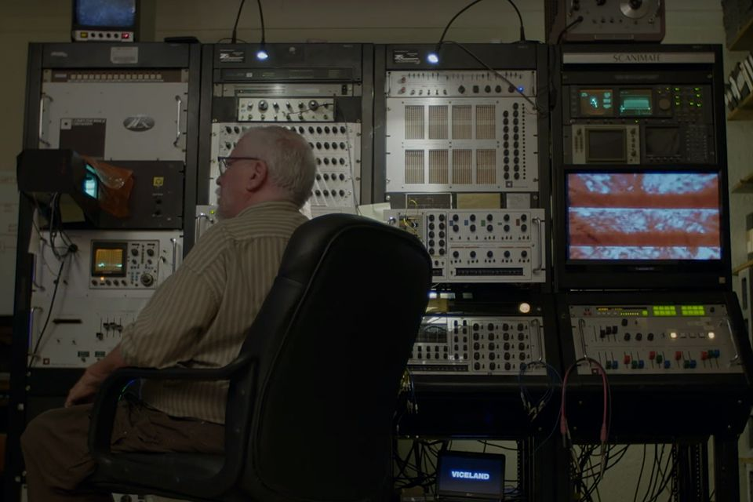

Hint
Scanimate
An
analog
machine used to produce television graphics from the late 1960s to the early 1980s
Could produce motion 2d and 3d graphics realtime



:max_bytes(150000):strip_icc()/GettyImages-1642310291-566edad23df78ce161a2c600.jpg)